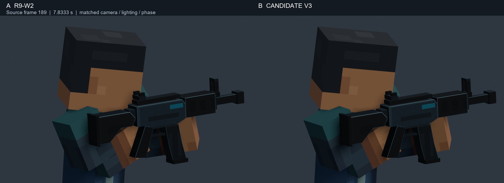
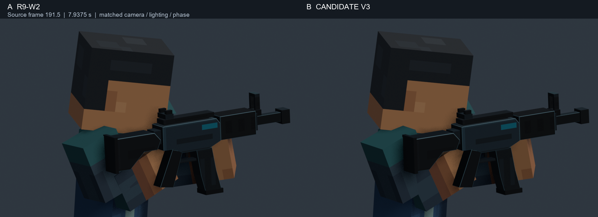
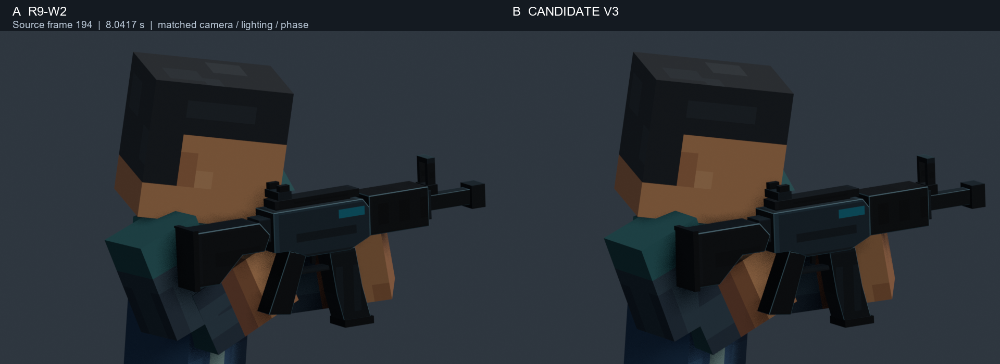
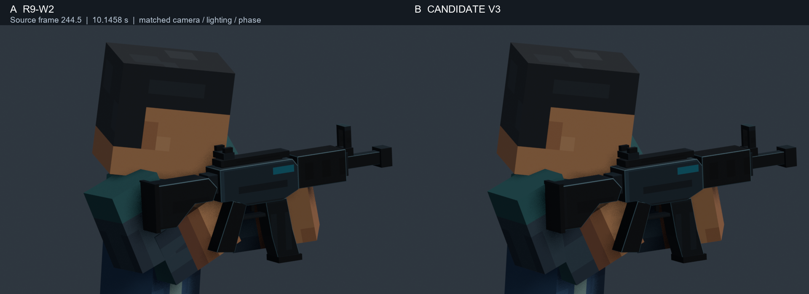
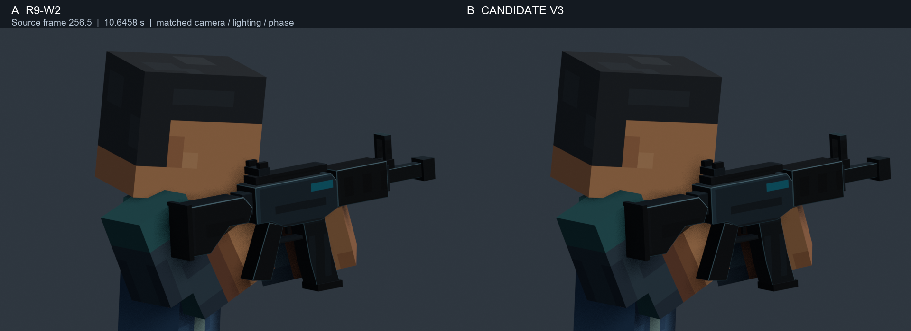

A = R9-W2. B = candidate V3. Same camera projection, timing, path and lower-body phase. Only the right upper-arm and forearm rotation curves changed. Rifle and support-arm motion are preserved.
ARTISTIC STATUS: AWAITING HUMAN REVIEW. The reported overlap is reduced, with residual edge contact elsewhere. Numerical checks are sampled evidence. Inspection here used ordered frames, not continuous perceptual playback.
Focused report · Contact validation · Composition / temporal validation




